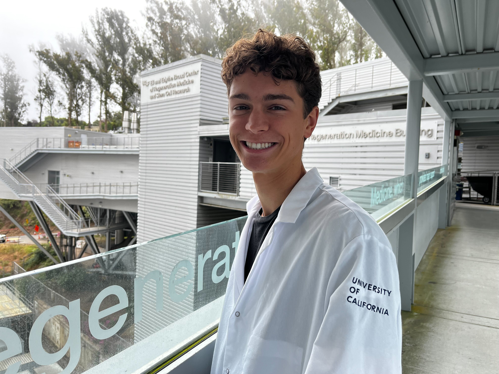
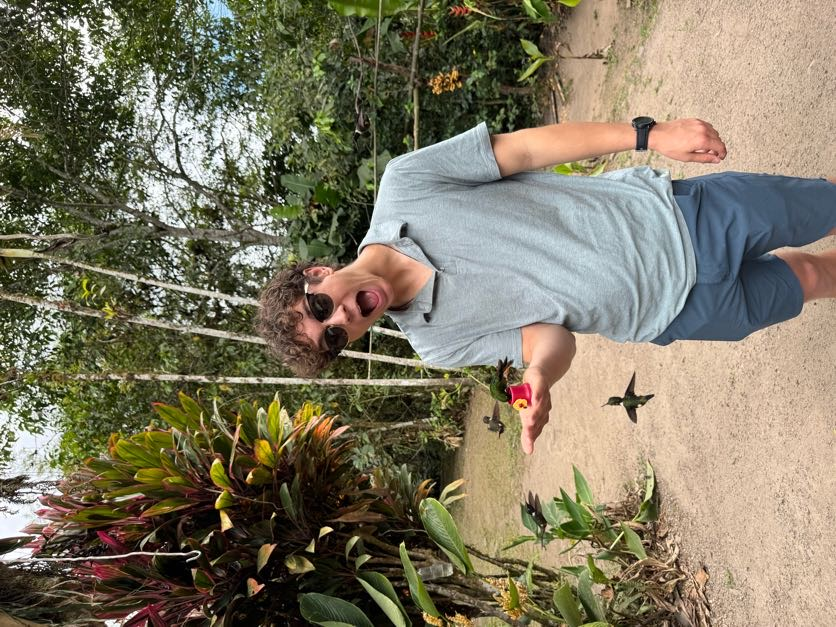
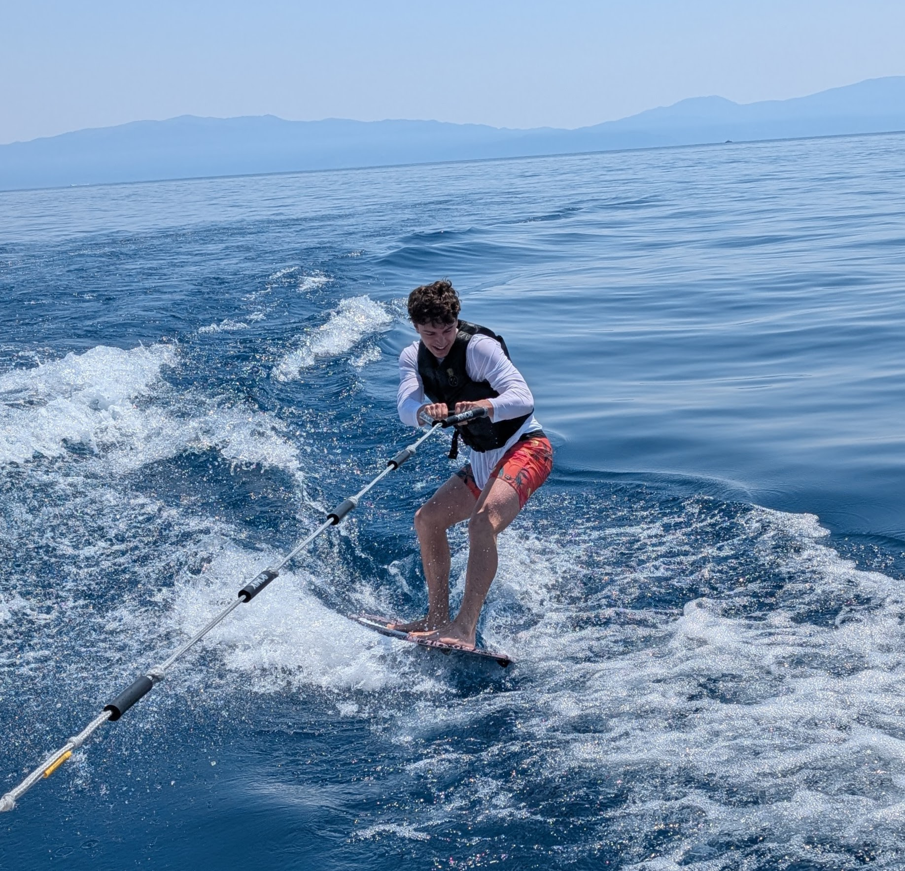
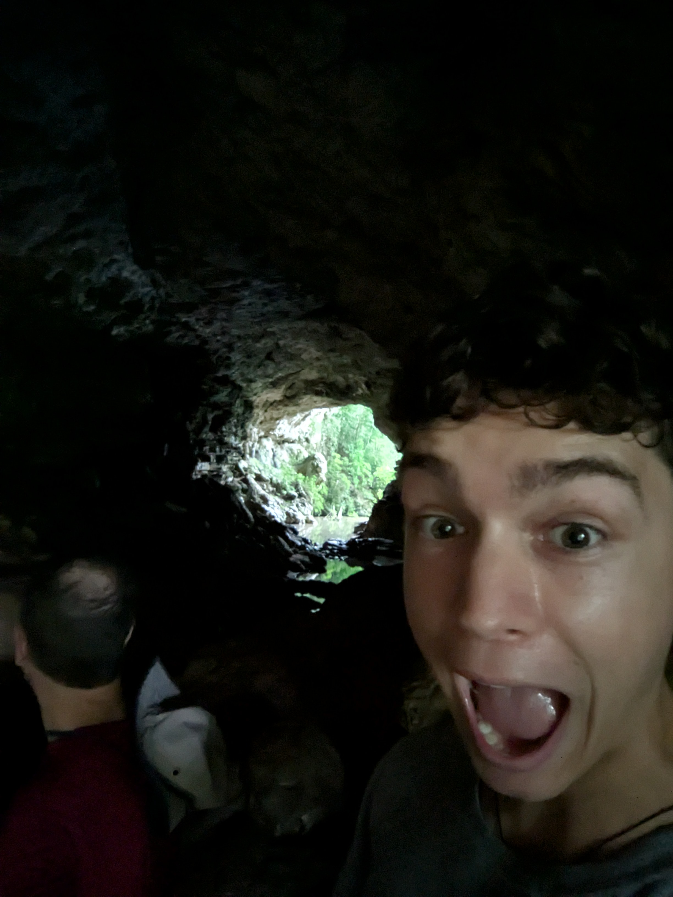
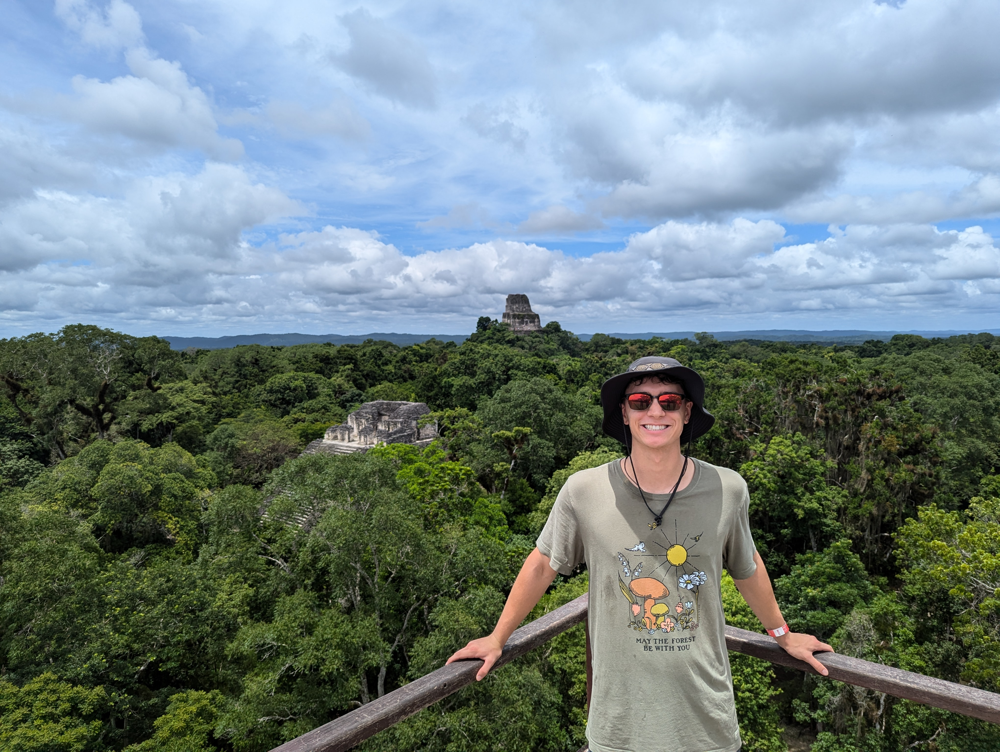
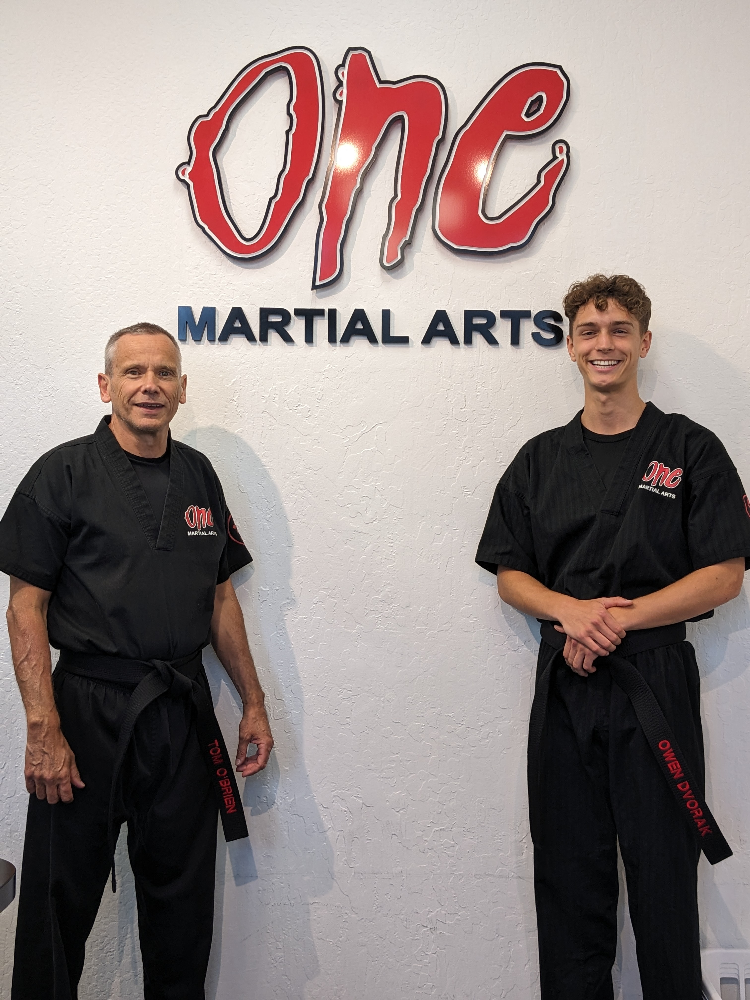

UC San Diego · Pre-Medicine
Patient navigator. Nonprofit co-founder. Community health for the people who need advocates.
About
My work is oriented around one question: what actually prevents people from getting care, and what can a motivated student do about it? Patient navigation, injury prevention, clinical research. All of it built around communities that don't have enough people in their corner.
I'm heading toward pediatric hematology/oncology, but the motivating force is broader than one specialty. Vulnerable populations across age groups, socioeconomic contexts, and health systems share structural problems. Pediatrics offers some of the sharpest leverage points: intervene early, change long-term health trajectories, work within the family system. It's also where I find the conditions most intellectually gripping and the stakes most concrete.
I co-founded the San Diego Injury Prevention Program, founded the Aristeia Health Initiative, run direct patient navigation for families leaving Rady post-discharge, and work on clinical research across pediatric oncology, hematology, and surgery. The goal isn't to accumulate experiences. It's to build programs that outlast my involvement and change what's available to people who need it most.
Life outside the clinic






Explore
AHI, SDIPP, NMDP: what each is, what it's building toward, and what it deliberately isn't.
Clinical research across pediatric oncology, hematology, and surgery.
On commitment, clinical ethics, rationing, and paternalism. Where I'm going intellectually.
Community organizations and clinical teams interested in partnering with AHI or SDIPP.
How to get involved with meaningful patient-benefit work in San Diego.
Contact
For collaboration, student involvement, partnership inquiries, or anything in the pediatric community health space.
oedvorak@ucsd.edu650-779-7986 · UC San Diego